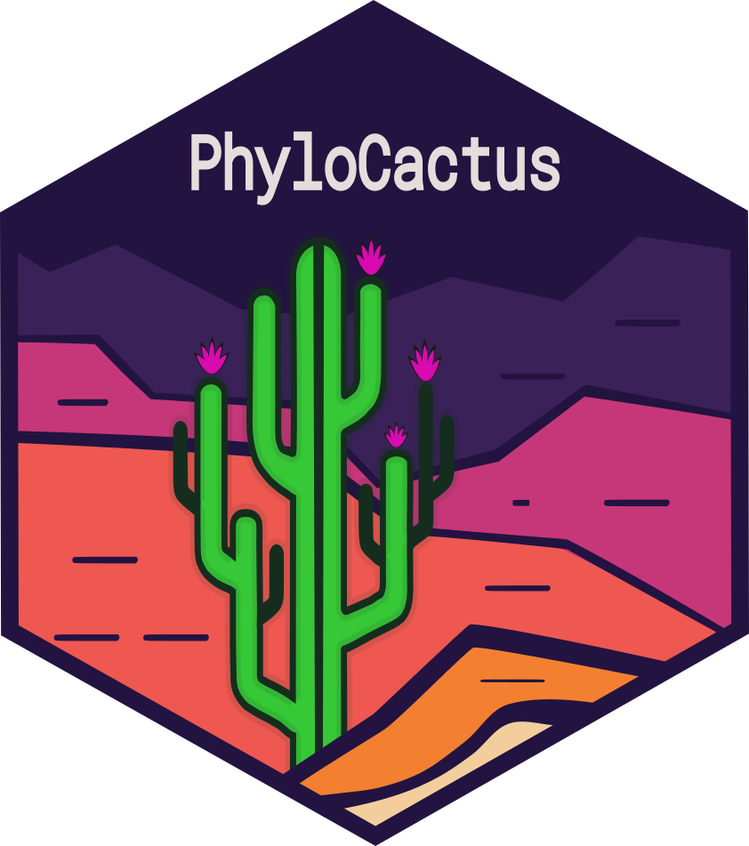

Path to the checklist of Cactaceae (Korotkova et al. 2021)
Source:R/checklist.R
phylocactus_checklist.RdReturns the path of the local copy of the checklist of Caryophyllales.org (Korotkova et al. 2021)
that the modules read to reconcile species names. The checklist is not distributed with the package:
its use for this work is permitted, its redistribution is not. A user requests it from the team of
Caryophyllales.org (https://caryophyllales.org), who send it as an Excel workbook with one sheet
per family (Cactaceae, Anacampserotaceae) and their Facts_ sheets, and names it in
~/.Renviron (opened with usethis::edit_r_environ()):
Details
PHYLOCACTUS_CHECKLIST="/path/to/CactaceaeFullList_2026_07_01_Beatriz_Merino.xlsx"
The path is taken, in this order, from path and from the environment variable
PHYLOCACTUS_CHECKLIST. The function reports the md5 of the file and warns when it differs from
that of the checklist read by the reference run of the tutorials (version of 2026-07-01, md5
0ab7855cef6fe7db0e0105646d5fee08): Caryophyllales.org updates the checklist, so a copy obtained
later gives other counts than the tutorials.
References
Korotkova, N., Aquino, D., Arias, S., Eggli, U., Franck, A., Gómez-Hinostrosa, C., Guerrero, P. C., Hernández, H. M., Kohlbecker, A., Köhler, M., Luther, K., Majure, L. C., Müller, A., Metzing, D., Nyffeler, R., Sánchez, D., Schlumpberger, B. O., & Berendsohn, W. G. (2021). Cactaceae at Caryophyllales.org – a dynamic online species-level taxonomic backbone for the family. Willdenowia, 51(2), 251-270. doi:10.3372/wi.51.51208
Examples
if (FALSE) { # \dontrun{
checklist <- phylocactus_checklist()
readxl::excel_sheets(checklist)
} # }